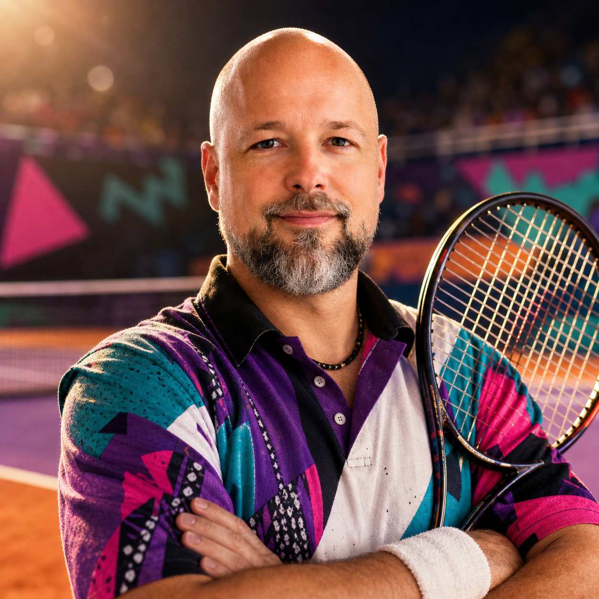
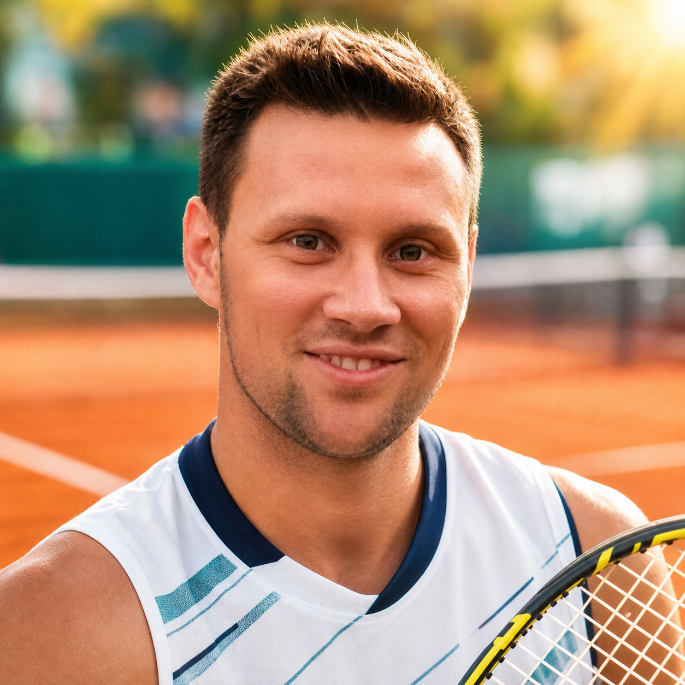
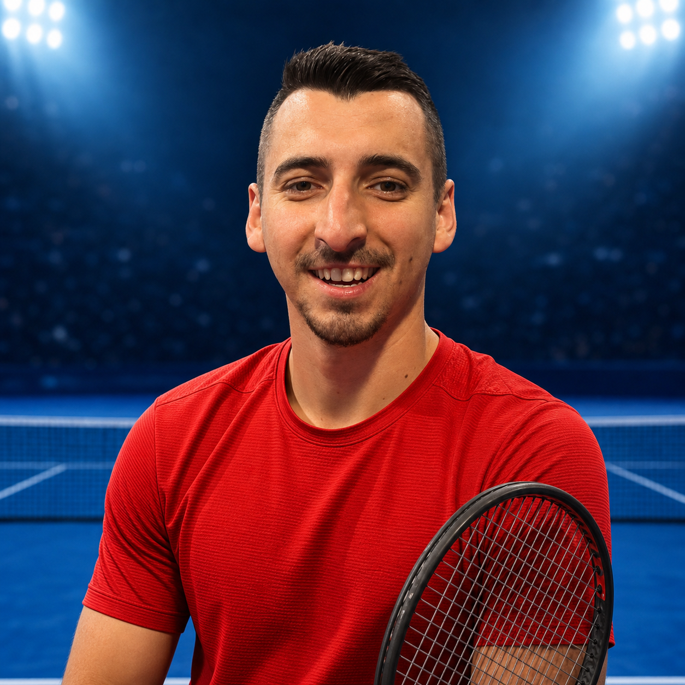

Featured PlayerDario StrelecThe Systems MaestroSystem ArchitectAge47TeamTeam 2GroupAStyleStructured Baseline
Featured PlayerMartin LackoThe UI MatadorDevelopment Team LeadAge27TeamTeam 1GroupBStyleFront UI Power
Featured PlayerMarko MožinaThe Operating AceHead of DevelopmentAge43TeamTeam 4GroupAStyleRetro Rebel Control
Featured PlayerLuka MikolajThe Main CommitterMain DeveloperAge35TeamTeam 4GroupBStyleExplosive Baseline Build
Featured PlayerPetar BrljakThe Integration CannonDeveloperAge26TeamIntegration TeamGroupAStyleCroatian Serve Storm
Featured PlayerDino PavićThe EFLEX MaestroHead of DevelopmentAge38TeamEFLEX TeamGroupBStyleElegant All-Court Control
Featured PlayerFilip JurinićThe Automation WallAutomation EngineerAge27TeamEFLEX TeamGroupBStyleElastic Baseline Defense
Featured PlayerKarlo MilošThe Integration CounterpuncherIntegration EngineerAge23TeamSystem/IT TeamGroupAStyleMedvedev-style Counterpunch
Featured PlayerIvan ŽuglićThe DBA BaselineDatabase AdministratorAge25TeamEFIT DBA TeamGroupBStyleZverev-style Baseline Power